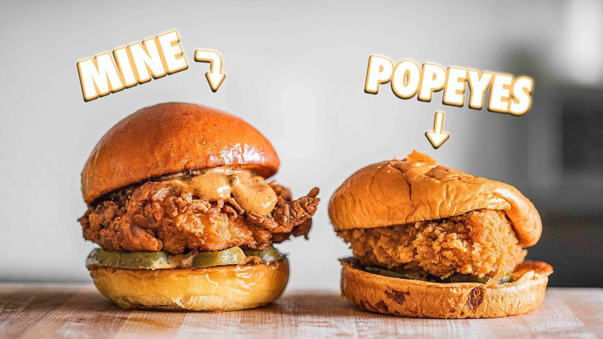

Description
Fried chicken cutlets topped with pickles,
homemade garlic mayo and covered with toasted buns.
Perfect for a quick week night meal, easily scalable
for bigger portions.
Ingredients
Marinade:
- 4-6 boneless skinless chicken thighs
- 2 cups (473ml) buttermilk
- 2tsp (10g) kosher salt
- 2tsp (7g) garlic powder
- 1tsp (4g) serrano powder (any pepper powder works here)
Flour mix:
- 3 cups (395g) all purpose flour
- 2.5 tsp (13g) kosher salt
- 2tsp (7g) garlic powder
- 1.5tsp (6g) smoked paprika
- 1/2 tsp (2g) fresh crackled black pepper
- 1 tsp (4g) cayenne (if you want spicy!)
- *optional - 1tsp (4g) oyster mushroom powder
Mayonnaise:
- ¾ cup (177ml) mayo
- 8 cloves black garlic puree
- 1 tbsp (16g) hot sauce
- Kosher salt to taste
- 1tsp (5g) smoked paprika
- Lemon juice to taste
Steps
Fried chicken marinade
- Toss chicken in marinade, let sit for an hour minimum or overnight maximum.
Dredge
- Add all ingredients in a medium sized container (Tip: for extra flaky bits, add droplets of marinade into dredge and mix together forming baby clumps)
- Make sure chicken is coated in flour and place on baking sheet with a rack. Do not pile on top of each other.
Frying
- Fill a cast iron pan with a neutral oil about halfway full. Using a fry or candy thermometer, heat oil to 350 degrees. Once heated, drop the chicken away from you and fry until golden brown with an internal temperature of 165 degrees. Take out of the oil into a sheet tray with a rack on top to cool.
Mayonnaise
- Combine all ingredients in a bowl.
Assembly
- Cut pickles lengthwise, not in rounds
- Toasted buns
- Mayo on bottom bun
- Pickles on the bottom bun
- Mayo on top bun
- Chicken in the middle
Return to main page
Back to top